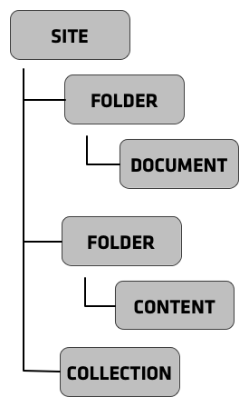

Created by Ramon Navarro Bosch / @bloodbare
From the user point of view
Content is the king (Dexterity)
With full multilingual
From the tech point of view

from plone.app.textfield import RichText
from plone.autoform import directives
from plone.namedfile import field as namedfile
from plone.supermodel.directives import fieldset
from plone.supermodel import model
from z3c.form.browser.radio import RadioFieldWidget
from zope import schema
from zope.schema.vocabulary import SimpleVocabulary
from zope.schema.vocabulary import SimpleTerm
from ploneconf.site import MessageFactory as _
LevelVocabulary = SimpleVocabulary(
[SimpleTerm(value=u'platinum', title=_(u'Platinum Sponsor')),
SimpleTerm(value=u'gold', title=_(u'Gold Sponsor')),
SimpleTerm(value=u'silver', title=_(u'Silver Sponsor')),
SimpleTerm(value=u'bronze', title=_(u'Bronze Sponsor'))]
)
class ISponsor(model.Schema):
"""Dexterity-Schema for Sponsors
"""
directives.widget(level=RadioFieldWidget)
level = schema.Choice(
title=_(u"Sponsoring Level"),
vocabulary=LevelVocabulary,
required=True
)
text = RichText(
title=_(u"Text"),
required=False
)
url = schema.URI(
title=_(u"Link"),
required=False
)
fieldset('Images', fields=['logo', 'advertisment'])
logo = namedfile.NamedBlobImage(
title=_(u"Logo"),
required=False,
)
advertisment = namedfile.NamedBlobImage(
title=_(u"Advertisment (Gold-sponsors and above)"),
required=False,
)
directives.read_permission(notes="cmf.ManagePortal")
directives.write_permission(notes="cmf.ManagePortal")
notes = RichText(
title=_(u"Secret Notes (only for site-admins)"),
required=False
)
http://yoursite.cat/folder-i-created/my-document/my_view
from Products.CMFCore.utils import getToolByName
from Products.Five.browser import BrowserView
from Products.CMFPlone.resources import add_resource_on_request
class TalkListView(BrowserView):
""" A list of talks
"""
def __call__(self):
add_resource_on_request(self.request, 'jquery.datatables')
return super(TalkListView, self).__call__()
def talks(self):
results = []
portal_catalog = getToolByName(self.context, 'portal_catalog')
current_path = "/".join(self.context.getPhysicalPath())
brains = portal_catalog(portal_type="talk",
path=current_path)
for brain in brains:
results.append({
'title': brain.Title,
'description': brain.Description,
'url': brain.getURL(),
'audience': ', '.join(brain.audience or []),
'type_of_talk': brain.type_of_talk,
'speaker': brain.speaker,
'uuid': brain.UID,
})
return results
<browser:page
name="talklistview"
for="*"
layer="..interfaces.IPloneconfSiteLayer"
class=".views.TalkListView"
template="templates/talklistview.pt"
permission="zope2.View"
/>
<html xmlns="http://www.w3.org/1999/xhtml" xml:lang="en" lang="en"
metal:use-macro="context/main_template/macros/master"
i18n:domain="ploneconf.site">
<body>
<metal:head fill-slot="javascript_head_slot">
<script type="text/javascript">
$(document).ready(function(){
var oTable = $('#talks').dataTable({
});
})
</script>
</metal:head>
<metal:content-core fill-slot="content-core">
<table class="listing" id="talks">
<thead>
<tr>
<th>
Title
</th>
<th>
Speaker
</th>
<th>
Audience
</th>
</tr>
</thead>
<tbody>
<tr tal:repeat="talk view/talks">
<td>
<a href="${talk/url}" title="${talk/description}">
${talk/title}
</a>
</td>
<td>
${talk/speaker}
</td>
<td>
${talk/audience}
</td>
</tr>
<tr tal:condition="not:view/talks">
<td colspan=3>
No talks so far :-(
</td>
</tr>
</tbody>
</table>
</metal:content-core>
</body>
</html>
site.folder.document.attribute
class IPerson(Interface):
def whichTShirtIMWearing(self):
pass
class CatalanGuy(object):
implements(IPerson)
def whichTShirtIMWearing(self):
return "estelada"
class BaskGuy(object):
implements(IPerson)
def whichTShirtIMWearing(self):
return "T-Shirt?"
<subscriber
for="object.IKindOfObject
zope.lifecycleevent.interfaces.IObjectModifiedEvent"
handler="function"
/>
<utility
for=".interfaces.IGoodAlcohol"
handler=".object.GoodAlcohol"
/>
<input class="pat-pickadate" type="text"
name="form.widgets.IDublinCore.effective"
value=""
data-pat-pickadate="{
'date': {
'format': 'mmmm d, yyyy',
'max': [2035, 1, 1],
'min': [1915, 1, 1],
'firstDay': 0,
'selectYears': 200,
'placeholder': 'Posa una data',
'today': 'Avui'},
'time': {
'placeholder': 'Tria l\'hora',
'today': 'Avui',
'format': 'h:i a'}}" >
<?xml version="1.0" encoding="UTF-8"?>
<rules
xmlns="http://namespaces.plone.org/diazo"
xmlns:css="http://namespaces.plone.org/diazo/css"
xmlns:xsl="http://www.w3.org/1999/XSL/Transform">
<theme href="/++theme++abb.basictheme/index.html" css:if-not-content=".userrole-anonymous"/>
<theme href="/++theme++abb.basictheme/index-anon.html" css:if-content=".userrole-anonymous"/>
<notheme css:if-not-content="#visual-portal-wrapper" />
<rules if-content="//*[@id='portal-top']">
<!-- Attributes -->
<copy attributes="*" theme="/html" content="/html"/>
<!-- Base tag -->
<before theme="/html/head/title" content="/html/head/base"/>
<!-- Title -->
<replace theme="/html/head/title" content="/html/head/title" />
<!-- Pull in Plone Meta -->
<after theme-children="/html/head" content="/html/head/meta" />
<!-- dont use Plone icons, use the theme -->
<drop css:content="head link[rel='apple-touch-icon']" />
<drop css:content="head link[rel='shortcut icon']" />
<!-- Script -->
<after theme-children="/html/head" content="/html/head/script" />
<!-- CSS -->
<after theme-children="/html/head" content="/html/head/link" />
</rules>
<!-- Copy over the id/class attributes on the body tag.
This is important for per-section styling -->
<copy attributes="*" css:content="body" css:theme="body" />
<!-- move global nav -->
<replace css:theme-children="#mainnavigation" css:content-children="#portal-mainnavigation" method="raw" />
<!-- hero unit on homepage only -->
<drop css:if-not-content="body.template-document_view.section-front-page"
css:theme="div.principal" />
<!-- full-width breadcrumb -->
<replace css:theme="#above-content" css:content="#viewlet-above-content" css:if-not-content=".userrole-anonymous"/>
<!-- Central column -->
<replace css:theme="#content-container" method="raw">
<xsl:variable name="central">
<xsl:if test="//aside[@id='portal-column-one'] and //aside[@id='portal-column-two']">col-xs-12 col-sm-6</xsl:if>
<xsl:if test="//aside[@id='portal-column-two'] and not(//aside[@id='portal-column-one'])">col-xs-12 col-sm-9</xsl:if>
<xsl:if test="//aside[@id='portal-column-one'] and not(//aside[@id='portal-column-two'])">col-xs-12 col-sm-9</xsl:if>
<xsl:if test="not(//aside[@id='portal-column-one']) and not(//aside[@id='portal-column-two'])">col-xs-12 col-sm-12</xsl:if>
</xsl:variable>
<div class="{$central}">
<!-- <p class="pull-right visible-xs">
<button type="button" class="btn btn-primary btn-xs" data-toggle="offcanvas">Toggle nav</button>
</p> -->
<div class="row">
<div class="col-xs-12 col-sm-12">
<xsl:apply-templates css:select="#content"/>
</div>
</div>
<footer class="row">
<div class="col-xs-12 col-sm-12">
<xsl:copy-of select="//div[@id='viewlet-below-content']"/>
</div>
</footer>
</div><!--/row-->
</replace>
<!-- Alert message -->
<replace css:theme-children="#global_statusmessage" css:content-children="#global_statusmessage" />
<!-- Left column -->
<rules if-content="//*[@id='portal-column-one']">
<replace css:theme="#column1-container">
<div class="col-xs-6 col-sm-3 sidebar-offcanvas" id="sidebar">
<aside id="portal-column-one">
<xsl:copy-of select="//*[@id='portal-column-one']/*"/>
</aside>
</div>
</replace>
</rules>
<!-- Right column -->
<rules if-content="//*[@id='portal-column-two']">
<replace css:theme="#column2-container">
<div class="col-xs-6 col-sm-3 sidebar-offcanvas" id="sidebar" role="complementary">
<aside id="portal-column-two">
<xsl:copy-of select="//*[@id='portal-column-two']/*"/>
</aside>
</div>
</replace>
</rules>
<!-- Content header -->
<replace css:theme="#portal-top" css:content-children="#portal-top" />
<replace css:theme-children="#portal-footer" css:content-children="#portal-footer-wrapper" />
<!-- contingut -->
<!-- <replace css:content-children="#portal-column-content" css:theme-children=".zona_central" css:if-not-content=".template-facetednavigation_view"/>
<replace css:content-children="#content-core" css:theme-children=".content" css:if-content=".template-facetednavigation_view"/>
<replace css:content-children="#left-area" css:theme-children=".filters" css:if-content=".template-facetednavigation_view"/>
<replace css:content-children="#left-area" css:theme-children=".filters" css:if-content=".template-facetednavigation_view"/>
--> <!-- <drop css:content-children="#faceted-left-column" css:if-content=".template-facetednavigation_view"/> -->
<replace css:content-children="#mainmenu" css:theme-children="#mainmenu" css:if-content=".userrole-authenticated"/>
<replace css:content="#viewlet-all-sites" css:theme="#all-sites" css:if-content=".userrole-authenticated"/>
<!-- toolbar -->
<replace css:theme="#portal-toolbar" css:content-children="#edit-bar" css:if-not-content=".ajax_load" css:if-content=".userrole-authenticated"/>
<drop css:content="#portal-anontools" css:if-content=".userrole-anonymous"/>
<drop css:content="#portal-searchbox"/>
</rules>
plone.rest
<plone:service
method="PUT"
for="plone.dexterity.interfaces.IDexterityContent"
factory=".demo.Put"
/>
class Put(Service):
def render(self):
return ISerializeToJSON(self.content)
... and the plone testing team
git clone git@github.com/plone/jump.into.git
python2.7 bootstrap.py
# You need python-dev libpng-dev libjpeg-dev build-essential
# libxml2-dev libxslt-dev (gcc)
./bin/buildout -v
# Coffee
./bin/instance fg
Content focused with sklearn
from zope.component import getAdapter
from collective.machinelearning.interfaces import ILearningString
getAdapter(obj, ILearningString)
And we store the corpus as a pickle
And we store the model as a pickle